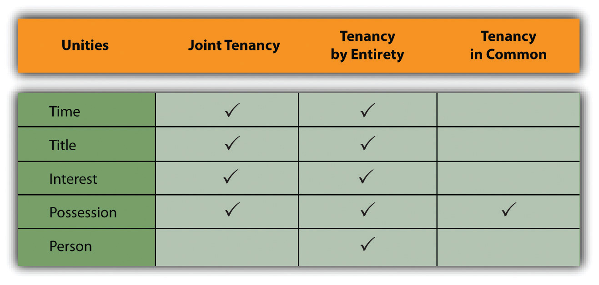

The transfer of property begins with the buyer’s selection of a form of ownership. Our emphasis here is not on what is being acquired (the type of property interest) but on how the property is owned.
One form of ownership of real property is legally quite simple, although lawyers refer to it with a complicated-sounding name. This is ownership by one individual, known as ownership in severaltyOwnership by one individual.. In purchasing real estate, however, buyers frequently complicate matters by grouping together—because of marriage, close friendship, or simply in order to finance the purchase more easily
When purchasers group together for investment purposes, they often use the various forms of organization discussed in Chapter 18 "Partnerships: General Characteristics and Formation", Chapter 19 "Partnership Operation and Termination", Chapter 20 "Hybrid Business Forms", and Chapter 21 "Corporation: General Characteristics and Formation"—corporations, partnerships, limited partnerships, joint ventures, and business trusts. The most popular of these forms of organization for owning real estate is the limited partnership. A real estate limited partnership is designed to allow investors to take substantial deductions that offset current income from the partnership and other similar investments, while at the same time protecting the investor from personal liability if the venture fails.
But you do not have to form a limited partnership or other type of business in order to acquire property with others; many other forms are available for personal or investment purposes. To these we now turn.
Joint tenancy is an estate in land owned by two or more persons. It is distinguished chiefly by the right of survivorship. If two people own land as joint tenants, then either becomes the sole owner when the other dies. For land to be owned jointly, four unities must coexist:
Figure 31.1 Forms of Ownership and Unities
Suppose a woman owns some property and upon marriage wishes to own it jointly with her husband. She deeds it to herself and her husband “as joint tenants and not tenants in common.” Strictly speaking, the common law would deny that the resulting form of ownership was joint because the unities of title and time were missing. The wife owned the property first and originally acquired title under a different conveyance. But the modern view in most states is that an owner may convey directly to herself and another in order to create a joint estate.
When one or more of the unities is destroyed, however, the joint tenancy lapses. Fritz and Gary own a farm as joint tenants. Fritz decides to sell his interest to Jesse (or, because Fritz has gone bankrupt, the sheriff auctions off his interest at a foreclosure sale). Jesse and Gary would hold as tenants in common and not as joint tenants. Suppose Fritz had made out his will, leaving his interest in the farm to Reuben. On Fritz’s death, would the unities be destroyed, leaving Gary and Reuben as tenants in common? No, because Gary, as joint tenant, would own the entire farm on Fritz’s death, leaving nothing behind for Reuben to inherit.
About half the states permit husbands and wives to hold property as tenants by the entiretyWhen spouses own property jointly and all unities are applicable.. This form of ownership is similar to joint tenancy, except that it is restricted to husbands and wives. This is sometimes described as the unity of person. In most of the states permitting tenancy by the entirety, acquisition by husband and wife of property as joint tenants automatically becomes a tenancy by the entirety. The fundamental importance of tenancy by the entirety is that neither spouse individually can terminate it; only a joint decision to do so will be effective. One spouse alone cannot sell or lease an interest in such property without consent of the other, and in many states a creditor of one spouse cannot seize the individual’s separate interest in the property, because the interest is indivisible.
Two or more people can hold property as tenants in commonWhen the unity of possession is present—that is, when each is entitled to occupy the property. None of the other unities—of time, title, or interest—is necessary, though their existence does not impair the common ownership. when the unity of possession is present, that is, when each is entitled to occupy the property. None of the other unities—of time, title, or interest—is necessary, though their existence does not impair the common ownership. Note that the tenants in common do not own a specific portion of the real estate; each has an undivided share in the whole, and each is entitled to occupy the whole estate. One tenant in common may sell, lease, or mortgage his undivided interest. When a tenant in common dies, his interest in the property passes to his heirs, not to the surviving tenants in common.
Because tenancy in common does not require a unity of interest, it has become a popular form of “mingling,” by which unrelated people pool their resources to purchase a home. If they were joint tenants, each would be entitled to an equal share in the home, regardless of how much each contributed, and the survivor would become sole owner when the other owner dies. But with a tenancy-in-common arrangement, each can own a share in proportion to the amount invested.
In ten states—Alaska, Arizona, California, Idaho, Louisiana, Nevada, New Mexico, Texas, Washington, and Wisconsin—property acquired during a marriage is said to be community propertyThere are differences among community property states, but the general theory is that, with certain exceptions, each spouse has an undivided equal interest in property acquired while the husband and wife are married to each other.. There are differences among these states, but the general theory is that with certain exceptions, each spouse has an undivided equal interest in property acquired while the husband and wife are married to each other. The major exception is for property acquired by gift or inheritance during the marriage. (By definition, property owned by either spouse before the marriage is not community property.) Property acquired by gift of inheritance or owned before the marriage is known as separate propertyProperty acquired by gift of inheritance or owned before the marriage.. Community property states recognize other forms of ownership; specifically, husbands and wives may hold property as joint tenants, permitting the survivor to own the whole.
The consequence of community property laws is that either the husband or the wife may manage the community property, borrow against it, and dispose of community personal property. Community real estate may only be sold or encumbered by both jointly. Each spouse may bequeath only half the community property in his or her will. In the absence of a will, the one-half property interest will pass in accordance with the laws of intestate succession. If the couple divorces, the states generally provide for an equal or near-equal division of the community property, although a few permit the court in its discretion to divide in a different proportion.
In popular parlance, a condominium is a kind of apartment building, but that is not its technical legal meaning. Condominium is a form of ownership, not a form of structure, and it can even apply to space—for example, to parking spaces in a garage. The word condominium means joint ownership or control, and it has long been used whenever land has been particularly scarce or expensive. Condominiums were popular in ancient Rome (especially near the Forum) and in the walled cities of medieval Europe.
In its modern usage, condominium refers to a form of housing involving two elements of ownership. The first is the living space itself, which may be held in common, in joint tenancy, or in any other form of ownership. The second is the common space in the building, including the roof, land under the structure, hallways, swimming pool, and the like. The common space is held by all purchasers as tenants in common. The living space may not be sold apart from the interest in the common space.
Two documents are necessary in a condominium sale—the master deed and the bylaws. The master deed (1) describes the condominium units, the common areas, and any restrictions that apply to them; (2) establishes the unit owner’s interest in the common area, his number of votes at owners’ association meetings, and his share of maintenance and operating expenses (sometimes unit owners have equal shares, and sometimes their share is determined by computing the ratio of living area or market price or original price of a single unit to the whole); and (3) creates a board of directors to administer the affairs of the whole condominium. The bylaws usually establish the owners’ association, set out voting procedures, list the powers and duties of the officers, and state the obligations of the owners for the use of the units and the common areas.
Another popular form of owning living quarters with common areas is the cooperative. Unlike the person who lives in a condominium, the tenant of a cooperative does not own a particular unit. Instead, he owns a share of the entire building. Since the building is usually owned by a corporation (a cooperative corporation, hence the name), this means that the tenant owns stock in the corporation. A tenant occupies a unit under a lease from the corporation. Together, the lease and stock in the building corporation are considered personal, not real, property.
In a condominium, an owner of a unit who defaults in paying monthly mortgage bills can face foreclosure on the unit, but neighbors in the building suffer no direct financial impact, except that the defaulter probably has not paid monthly maintenance charges either. In a cooperative, however, a tenant who fails to pay monthly charges can jeopardize the entire building, because the mortgage is on the building as a whole; consequently, the others will be required to make good the payments or face foreclosure.
A time-share is an arrangement by which several people can own the same property while being entitled to occupy the premises exclusively at different times on a recurring basis. In the typical vacation property, each owner has the exclusive right to use the apartment unit or cottage for a specified period of time each year—for example, Mr. and Mrs. Smith may have possession from December 15 through December 22, Mr. and Mrs. Jones from December 23 through December 30, and so on. The property is usually owned as a condominium but need not be. The sharers may own the property in fee simple, hold a joint lease, or even belong to a vacation club that sells time in the unit.
Time-share resorts have become popular in recent years. But the lure of big money has brought unscrupulous contractors and salespersons into the market. Sales practices can be unusually coercive, and as a result, most states have sets of laws specifically to regulate time-share sales. Almost all states provide a cooling-off period, or rescission period; these periods vary from state to state and provide a window where buyers can change their minds without forfeiting payments or deposits already made.
Property is sometimes owned by one person or one entity, but more often two or more persons will share in the ownership. Various forms of joint ownership are possible, including joint tenancies, tenancy by the entirety, and tenancy in common. Married persons should be aware of whether the state they live in is a community property state; if it is, the spouse will take some interest in any property acquired during the marriage. Beyond traditional landholdings, modern real estate ownership may include interests in condominiums, cooperatives, or time-shares.